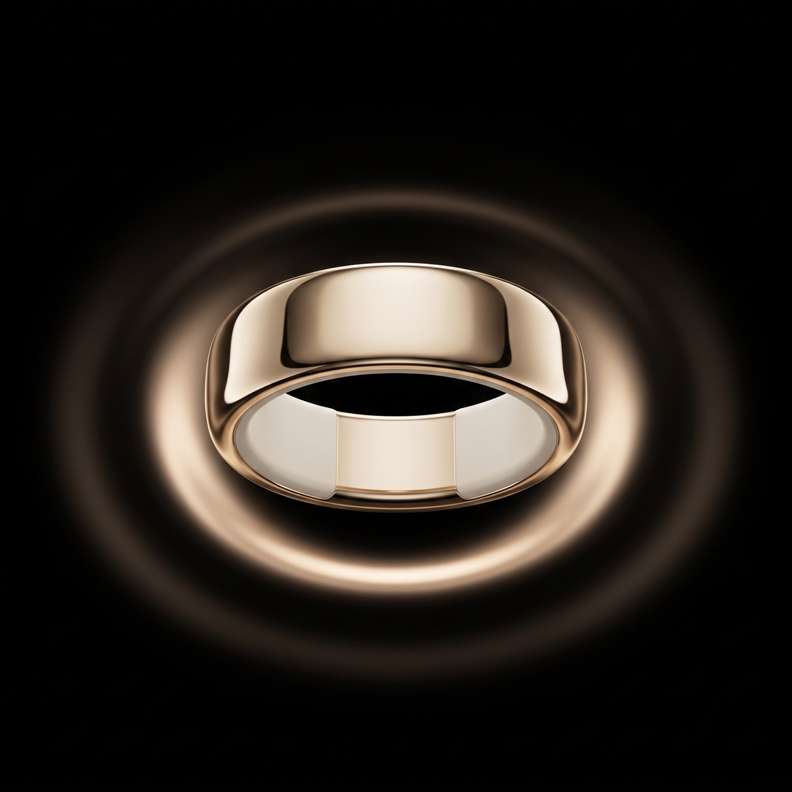
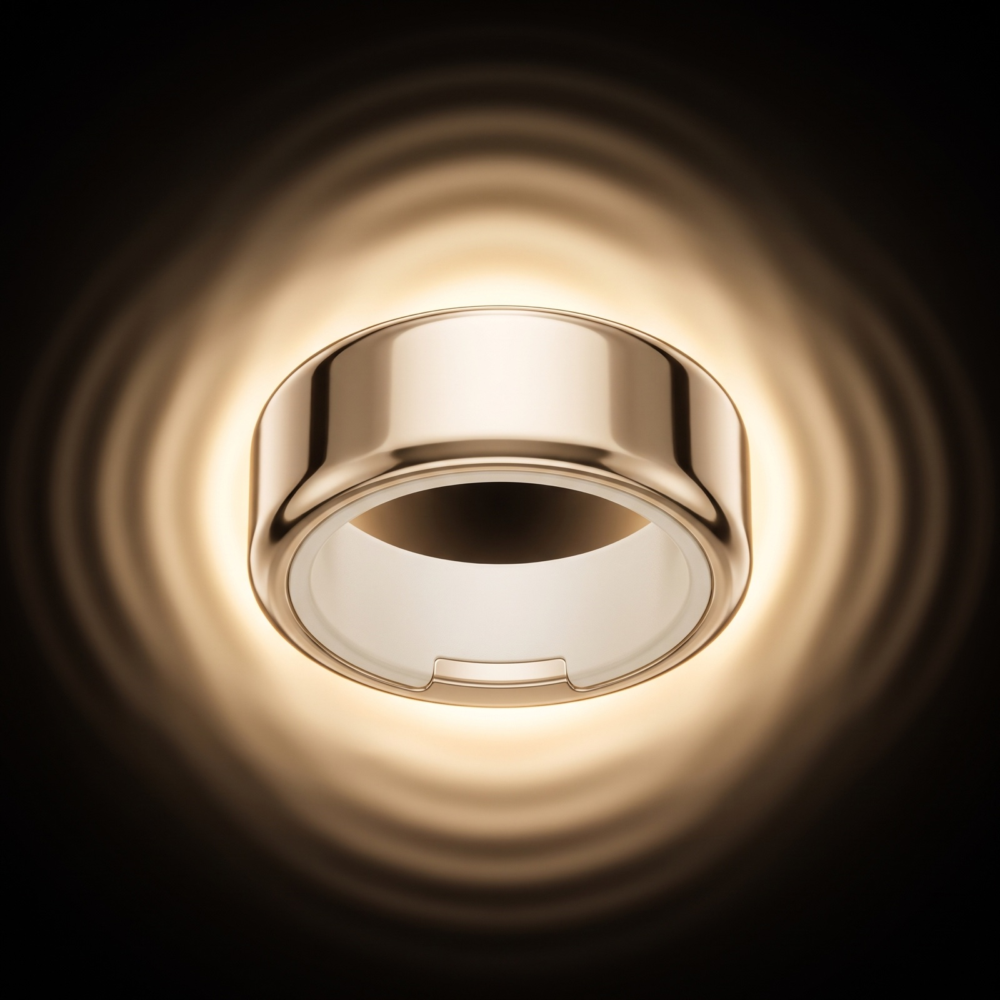
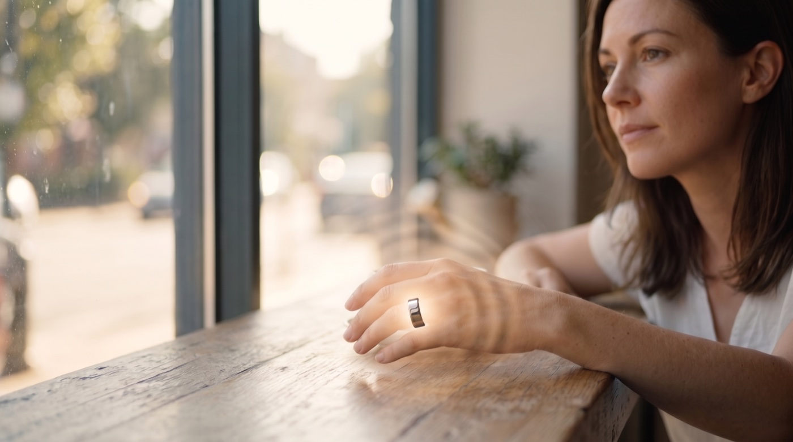

pulse·
New ripple · pick the variation
← content gallery
One pulse: glow → diffuse → ripple.
The new direction, replacing concentric and caustic: the pulse originates as a single soft glow centered on the ring, expands and diffuses, then continues rippling outward. Always centered on the ring. Four variations at different points in that one motion — pick the one that is the Pulse.
The variation — on the ring

tn1
Glow
Just the origin — a soft centered bloom.

tn2
Diffuse
The glow expands into a broad soft halo.

tn3
Ripple
Diffuses, then one soft outward wave.

tn4
Full journey
Glow → diffuse → wavy ripple, all in one.
recommendedThe same variation — in a scene

n1 · glow
n2 · diffuse
n3 · ripple
n4 · full